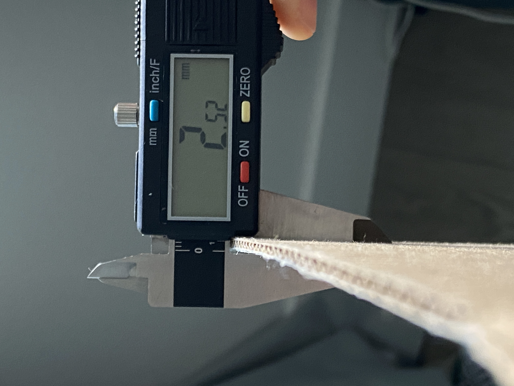
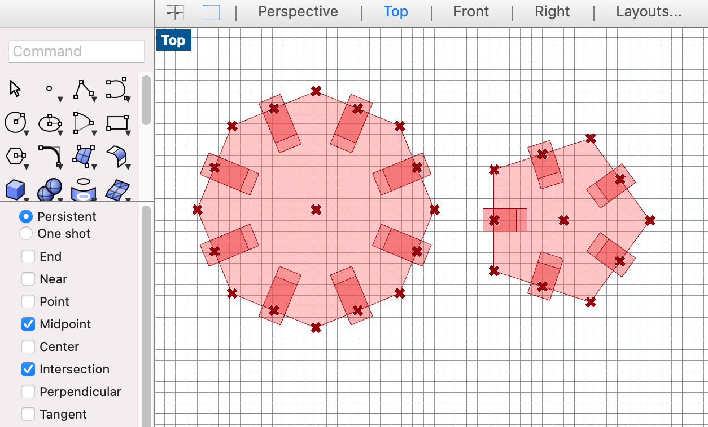
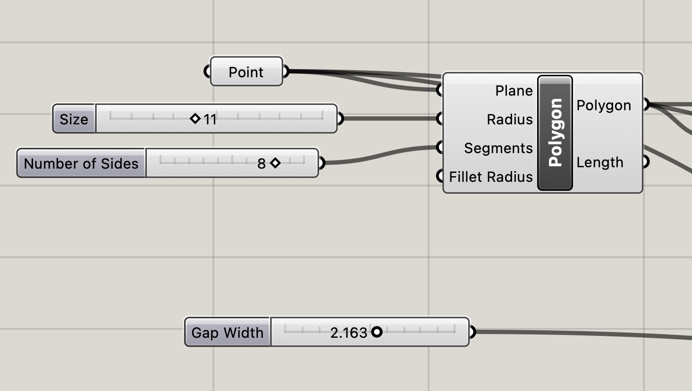
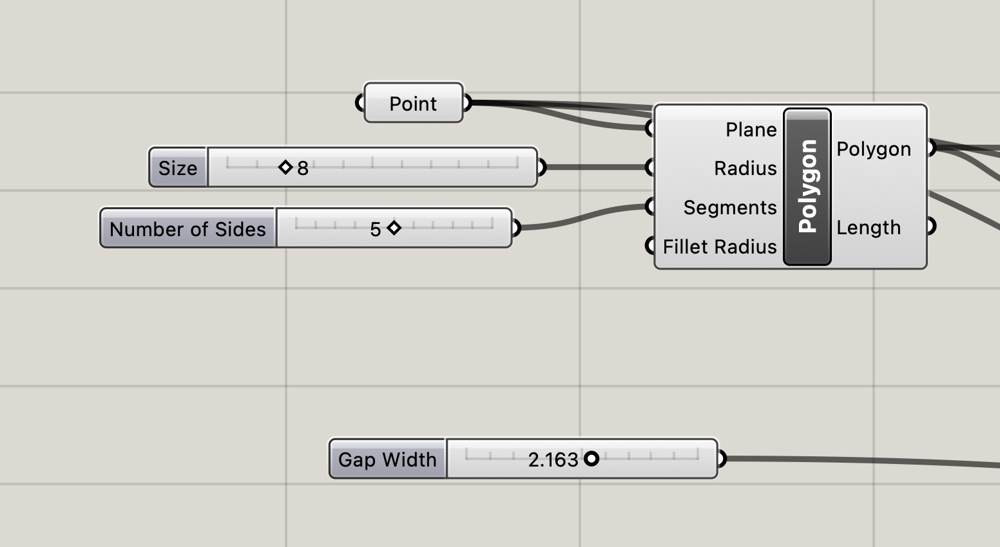
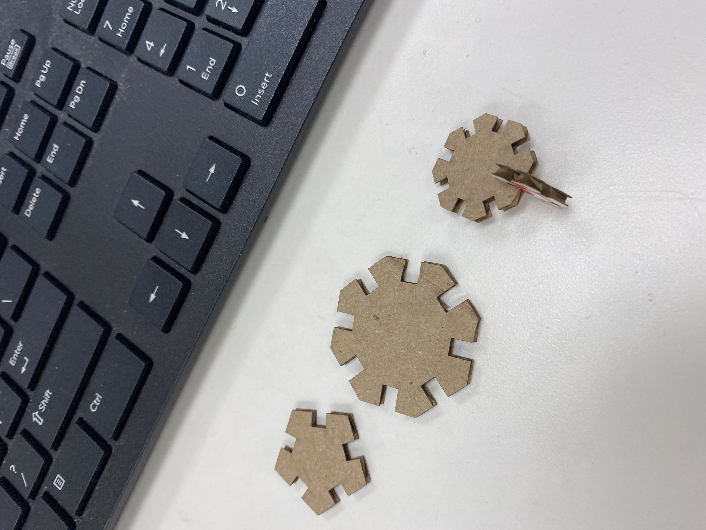
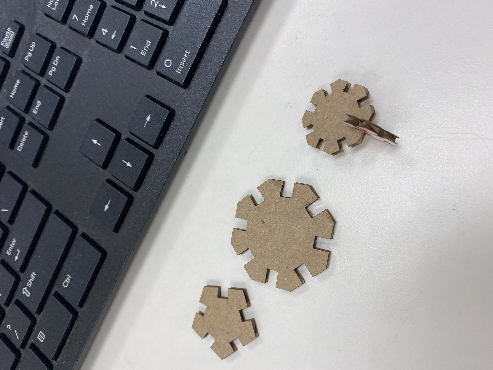
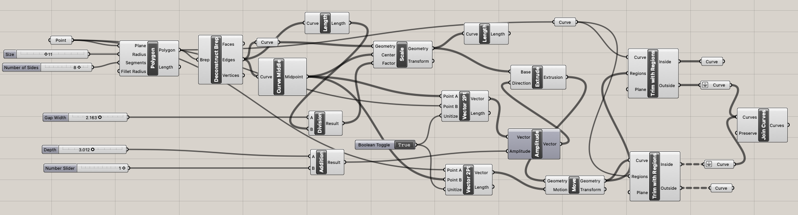

A3: Getting Started With 3D Printing!
Oct. 25, 2022Assembly
As my first laser cutting assginment dealt with polygons, I decided to continue the trend for my second assignment. For this assignment, I decided to create an octogon (11mm in radius) and hexagon (8mm in radius). Using the polygon component in Grasshopper, I was able to easily change the number of sides of the shape by adjusting the segment.

For the width of the gaps, I used a caliper to measure the width of the cardboard. The caliper measured the cardboard to be 2.52mm. I set my measurement to be a bit thinner (2.163mm) since the laser cutter tends to remove a bit more cardboard.
After experimenting with the different sizes, I was satisfied with the two shapes. I wanted the octogon to be a bit bigger than the hexagon. Ideally, the hexagon would connect the octogon pieces together.
These are the measurements of the shapes that I ended up with when modeling in Grasshopper.

Printing
I went back to the 8 since that machine tends to break down less than the one at the MILL. I had issues with exporting the Rhino file to Adobe Illustrator and opening up the Illustor file on the computer to laser cut. A work around was to export the Rhino rile as a .dxf file and then importing it into Adobe Illustrator. That worked well, but I had issues with keeping the same size when importing. These are some of the test pieces that I had printed. The shapes were way too big during my first print. I kept sizing the shapes down until the gaps were able to link with each other. Third try was a charm!
 

| thing! | dimensions! (± 0.005 mm) | print time! | |||||||||||||||||||||||||||||||||||||||||||||||||||||||||||||||||||||||||||||||||
|---|---|---|---|---|---|---|---|---|---|---|---|---|---|---|---|---|---|---|---|---|---|---|---|---|---|---|---|---|---|---|---|---|---|---|---|---|---|---|---|---|---|---|---|---|---|---|---|---|---|---|---|---|---|---|---|---|---|---|---|---|---|---|---|---|---|---|---|---|---|---|---|---|---|---|---|---|---|---|---|---|---|---|---|
| cubes! | width! (mm) | height! (mm) | depth! (mm) | estimated! (mins) | actual! (mins) | material estimation! (g) | |||||||||||||||||||||||||||||||||||||||||||||||||||||||||||||||||||||||||||||
| 20mm low quality cube w/ brim | 20.22 | 20.02 | 20.20 | 24 | 24 | 4 | |||||||||||||||||||||||||||||||||||||||||||||||||||||||||||||||||||||||||||||
| 20mm standard quality cube w/ brim | 19.65 | 20.07 | 20.10 | 27 | 25 | 4 | |||||||||||||||||||||||||||||||||||||||||||||||||||||||||||||||||||||||||||||
| 20mm super quality cube w/ brim |
19.72 | 20.06 | 19.99 | 55 | 55 | 4 | |||||||||||||||||||||||||||||||||||||||||||||||||||||||||||||||||||||||||||||
| 20mm low quality cube w/ concentric top & bottom | 19.88 | 20.05 | 19.75 | 24 | 27 | 4 | |||||||||||||||||||||||||||||||||||||||||||||||||||||||||||||||||||||||||||||
| tubes! | diameter! (mm) | height! (mm) | wall thickness! (mm) | estimated! (mins) | actual! (mins) | material estimation! (g) | |||||||||||||||||||||||||||||||||||||||||||||||||||||||||||||||||||||||||||||
| 30mm standard quality tube w/ single extrusion wall thickness | 29.88 | 30.07 | 0.5-0.9 | 30 | 35 | 3 | |||||||||||||||||||||||||||||||||||||||||||||||||||||||||||||||||||||||||||||
| 30mm standard quality tube w/ double extrusion wall thickness & random z-seam alignment | 29.54 | 30.08 | 0.80 - 1.01 | 30 | 36 | 3 | |||||||||||||||||||||||||||||||||||||||||||||||||||||||||||||||||||||||||||||
| 30mm standard quality cylinder* with special mode "spiralize outer contour" |
29.28 | 30.68 | 0.53 | 36 | 37 | 2 | |||||||||||||||||||||||||||||||||||||||||||||||||||||||||||||||||||||||||||||
| cylinders! | diameter! (mm) | height! (mm) | estimated! (mins) | actual! (mins) | material estimation! (g) | ||||||||||||||||||||||||||||||||||||||||||||||||||||||||||||||||||||||||||||||
| 30mm standard quality cylinder exported w/ 0.1mm tolerance | 29.50 | 30.03 | 48 | 49 | 6 | ||||||||||||||||||||||||||||||||||||||||||||||||||||||||||||||||||||||||||||||
| 30mm standard quality cylinder exported w/ 0.001mm tolerance | 30.15 | 30.05 | 48 | 49 | 6 | ||||||||||||||||||||||||||||||||||||||||||||||||||||||||||||||||||||||||||||||
| 30mm standard quality cylinder printed on its side with supports on | 29.93 | 29.94 | 60 | 59 | 6 | ||||||||||||||||||||||||||||||||||||||||||||||||||||||||||||||||||||||||||||||
Once I got the right size, I printed the shapes out. It's always so satisfying to watch the laser cutter do its job!

Here's the final product after assembling all the pieces together. Not sure what I was going for, so I guess it's up to everyone's interpretation.
It's giving...abstract art.

Laser cutter settings:
- Speed: 100
- Power: 80
- PPI: 300
Here's a screenshot of the Grasshopper file:
Acknowledgement
Junchao for the tutorial on grasshopper – it was very much needed to thoroughly understand everything!
Source Files
Rhino fileGrasshopper file
Adobe file
Return to Main